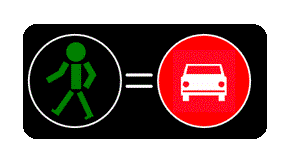
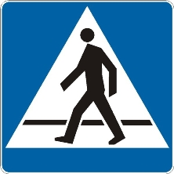
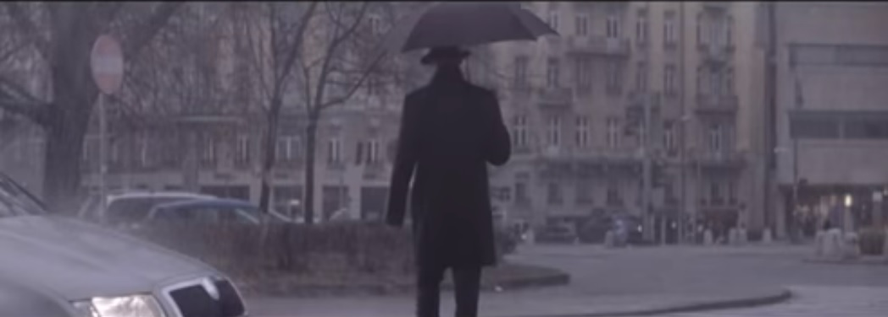

S
t
r
e
f
a
P
i
e
s
z
a
Czy zawsze należy wykonać polecenia policji?
(Nie)bezpieczni seniorzy
Wizja zero w praktyce, czyli jak powinien wyglądać bezpieczny przystanek
O pijanych kierowcach z zupełnie innej beczki. Jeszcze raz.
Uwaga! Nowe zadanie!
Segregacja czy integracja?
Kto ochroni pieszych przed policją?
Już my was ochronimy
Opinia dotycząca projektu zmian w PoRD
Poruszam się w mieście - po ludzku. Apel do gazety
Prawdziwe pierwszeństwo dla pieszych. Nareszcie!
Jak stoję, to chcę iść, jak idę, to mam stać. Logika dla pieszych w polskim prawie.

Bo zielone było za krótkie
Winić ofiarę?
Nie róbmy polityki, budujmy chodniki!
Zielone? Jakie zielone! Bezpieczeństwo pieszych po polsku
Gdy pieszy chce przejść przez jezdnię...
Efekty uboczne grodzenia osiedli
Komunikat kampanii Weekend bez Ofiar
Dyskryminacja pieszych w Polsce

Zapomniana inicjatywa Zarządu Dróg Miejskich

Niewidoczni - stara kampania, nowe pytania.
Powitanie
Wyspa na Rozdrożu lądowiskiem dla UFO